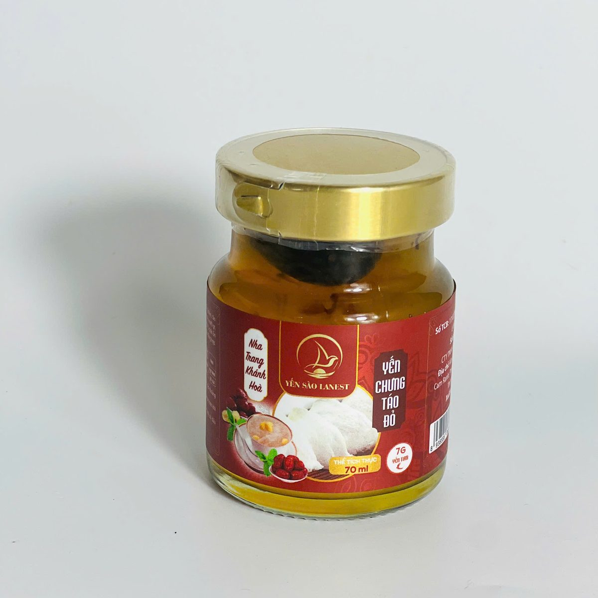
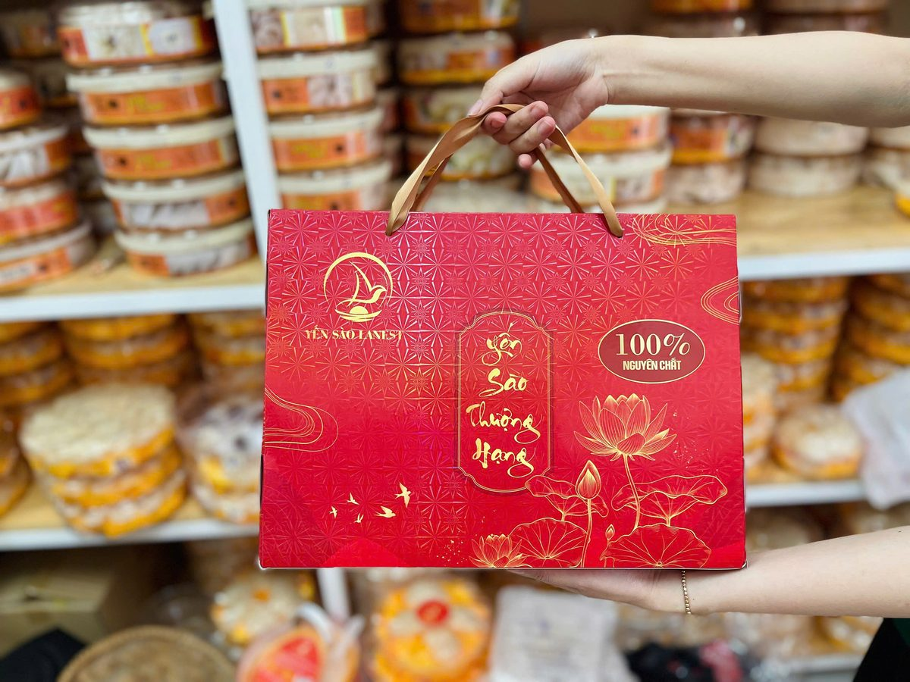

Nước Yến Đóng Lon Và Yến Hũ Chưng Sẵn Khác Nhau Thế Nào? Đọc Nhãn Trước Khi Mua
Yến Sào Lanest · Đăng ngày 26/11/2026

Ra tạp hóa thấy lon nước yến, vào cửa hàng yến lại thấy hũ yến chưng sẵn, giá chênh nhau nhiều lần. Nhiều khách hỏi Lanest: nước yến đóng lon và yến hũ khác nhau ở đâu, có phải chỉ khác cái vỏ? Câu trả lời nằm trên nhãn: mục đích của sản phẩm, cách ghi lượng yến, và thứ tự các thành phần. Bài này chỉ cách đọc để chọn đúng món mình cần, không phải để chê món nào.
Hũ yến chưng táo đỏ 70ml, nhãn ghi rõ "7G yến tươi" và thể tích thực
1. Cùng chữ "yến", nhưng mua vì hai lý do khác nhau
Người mua sản phẩm từ yến thường chia hai kiểu khá rõ:
- Mua để giải khát: lon nước mát, rẻ, có sẵn ở tạp hóa, quán ăn, đám tiệc. Uống thay nước ngọt.
- Mua để bồi bổ, biếu tặng: tìm ở cửa hàng yến, siêu thị, nhà thuốc. Người mua quan tâm trong đó có bao nhiêu yến, nguồn gốc ở đâu.
Hai nhu cầu đều chính đáng. Rắc rối chỉ xảy ra khi người mua cần món thứ hai mà cầm nhầm món thứ nhất, chỉ vì cả hai đều in chữ "yến" thật to.
2. "Nước yến lon" thật ra có hai loại
Trên kệ hiện nay, lon nước yến thường thuộc một trong hai nhóm:
- Nước yến sào: thành phần thường là nước, đường, yến và chất ổn định; lượng yến hay được ghi bằng phần trăm.
- Nước yến ngân nhĩ: có thêm ngân nhĩ (nấm tuyết); lượng yến hay được ghi bằng miligam trên mỗi lít.
Với nhóm có ngân nhĩ, phần "sánh sánh" trong lon có thể đến từ ngân nhĩ nhiều hơn là từ yến. Cách chắc nhất vẫn là đọc nhãn của chính lon mình cầm. Đó là đồ uống giải khát, uống ngon miệng là chính.
3. Đừng so con số phần trăm với con số gram
Đây là chỗ người mua dễ bị rối nhất. Trên các nhãn đang bán, lượng yến được ghi theo ba kiểu:
- Phần trăm (%): nhưng nhãn hiếm khi nói là phần trăm của yến khô, yến tươi đã nở hay dịch yến đã chưng. Nên con số phần trăm của hai nhãn khác nhau chưa chắc so được với nhau.
- Miligam trên lít (mg/l): nghe con số có vẻ lớn, nhưng một miligam chỉ bằng một phần nghìn gam.
- Gam trong mỗi hũ: ghi thẳng "7g yến tươi" hay "1,5g tổ yến". Đây là cách dễ hiểu nhất với người mua.
Mẹo nhỏ: thấy đơn vị khác nhau thì đừng vội so. Hãy hỏi người bán "mỗi lon, mỗi hũ có bao nhiêu gam yến, là yến khô hay yến tươi?". Người bán hàng tử tế sẽ trả lời được.
4. Thứ tự thành phần nói thật hơn con số
Trên nhãn, thành phần thường được xếp từ nhiều tới ít. Vì vậy chỉ cần nhìn ba chữ đầu tiên sau "Thành phần":
- Nếu đường đứng trước yến, nghĩa là trong lon đường nhiều hơn yến.
- Nếu có ngân nhĩ, nấm tuyết, chất làm dày đứng trước yến, độ sánh chủ yếu đến từ các thành phần đó.
- Các mã INS là phụ gia (chất ổn định, chất điều chỉnh độ acid). Có phụ gia không phải là xấu, miễn được ghi rõ trên nhãn.
Cách đọc từng dòng trên nhãn, từ tên sản phẩm tới số tự công bố, có trong bài cách đọc nhãn yến hũ.

Hộp quà dòng tổ yến chưng nguyên chất 100% của Lanest
5. Hũ yến Lanest ghi lượng yến thế nào
Lanest không làm nước yến đóng lon. Hai dòng yến hũ chưng sẵn đều ghi lượng yến bằng gam ngay trên nhãn:
| Dòng | Lượng yến mỗi hũ | Thành phần (theo nhãn) |
| Yến hũ 7g yến tươi (14 vị) | 7g yến tươi, hũ 70ml | Nước, yến tươi 7g, đường phèn (hoặc isomalt ở 2 vị ăn kiêng), nguyên liệu của vị, collagen thủy phân, chất xơ inulin, chất ổn định, chất điều chỉnh độ acid, hương yến tổng hợp |
| Tổ yến chưng nguyên chất 100% (3 vị) | 1,5g tổ yến, tương đương 15g yến tươi, hũ 70ml | Nước tinh khiết, tổ yến, đường phèn, nguyên liệu của vị; không phụ gia |
Vì dòng 7g có phụ gia ghi rõ trên nhãn, Lanest không gọi dòng này là "100% yến". Hai vị dành cho trẻ em không có collagen. Muốn biết nên chọn dòng nào, anh chị xem bài yến hũ nguyên chất 100% và yến hũ 7g.
6. Vậy nên mua món nào?
- Cần một thức uống mát, rẻ, mời khách, đãi tiệc: nước yến lon là đủ. Đừng kỳ vọng nó thay được một hũ yến.
- Cần bồi bổ đều đặn cho mình, cho ba mẹ: chọn sản phẩm ghi rõ gam yến mỗi hũ, có số tự công bố, có nơi chịu trách nhiệm rõ ràng. Cách dùng đều đặn có trong bài uống yến hũ mỗi ngày có tốt không.
- Muốn nhiều yến nhất trong một lần dùng: tự chưng yến tinh chế, hoặc chọn dòng hũ ghi lượng tổ yến cao.
- Mua làm quà: lật hộp xem nhãn trước khi nhìn bao bì đẹp.
Câu hỏi thường gặp
Một lon nước yến có bằng một hũ yến chưng không?
Thường là không so được, vì cách ghi lượng yến khác nhau. Hãy xem nhãn ghi bao nhiêu gam yến mỗi đơn vị và thành phần nào đứng đầu.
Nước yến ngân nhĩ có phải là yến không?
Có một lượng yến rất nhỏ, ghi theo miligam trên lít. Phần lớn độ sánh đến từ ngân nhĩ (nấm tuyết). Đó là đồ uống giải khát.
Yến hũ có phụ gia thì có đáng lo không?
Phụ gia được phép dùng và ghi rõ mã trên nhãn thì không có gì giấu giếm. Ai muốn hũ không phụ gia thì chọn dòng nguyên chất 100%.